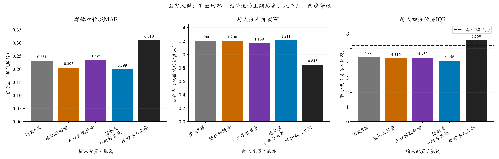
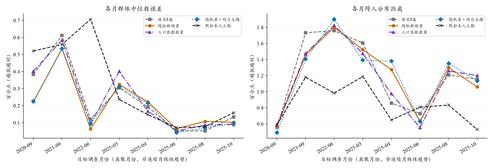
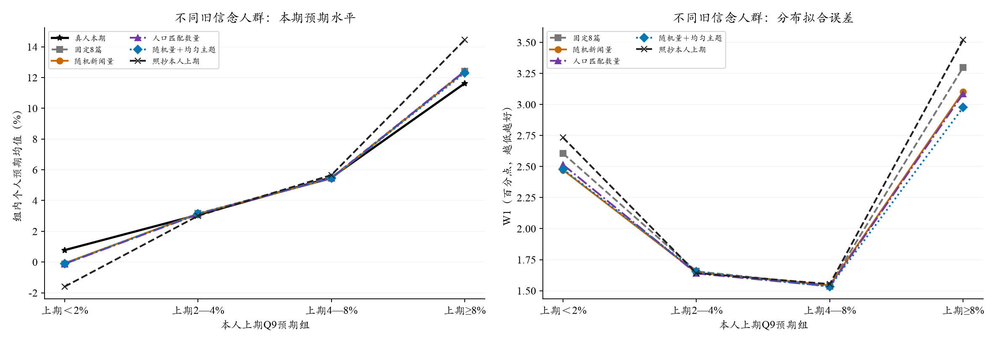

新闻接触量与主题匹配：V3.2八期验证
后续工作配置采用随机3/8/20篇新闻，保留50/50主题抽取。中心与个人误差有小幅收益，W1近乎不变；原预登记的分布改善筛选仍记为未通过。
完整运行组合中，跨人W1最低的是“人口匹配数量”。最低点估计不等于稳健的机制证据；以下同时报告中心、分布、时期和重复敏感性。
工作配置取舍于2026-10-22根据用户反馈更新；原统计、预登记筛选及历史运行不变。取舍记录。采纳不等于已证实稳定改善微观结构。
四个较早月份各96人、四个2025年月各192人，共1152个人月。固定8篇、随机3/8/20篇、人口匹配数量、随机量＋均匀主题四组，各两遍；模型、价格、个人先验及问卷不变。固定目标人群主口径可评价1145个人月、951名不同受访者。
所有图和主表使用设计权重，月内计算后对八个月/两遍等权。Q9个人密度均值的跨人中位数，不是Q8，也不是全国官方headline。固定人群口径含显式上期后备，不将后备当新模型回答。
随机量的平均收益尚非稳定确认：第一遍中心MAE改善0.054pp，第二遍增加0.002pp；近期2025四期由0.108变为0.124pp，只有一个数量分配种子。近乎不变的总体W1不应自动否决工作采纳，但也不能据此证明无代价或每期都更好。
1. 数量分配和主题加权分别产生了什么影响？
随机新闻量 对 固定8篇
W1差 +0.000 pp；中位数MAE差 -0.026 pp。差为负表示候选更好。
W1有4/8个月不增；两遍W1差分别为+0.058、-0.057pp。预登记的分布改善筛选：未通过。工作配置的取舍另见下文，不改写本筛选。
人口匹配数量 对 随机新闻量
W1差 -0.032 pp；中位数MAE差 +0.029 pp。差为负表示候选更好。
W1有4/8个月不增；两遍W1差分别为-0.050、-0.014pp。预登记的分布改善筛选：未通过。工作配置的取舍另见下文，不改写本筛选。
随机量＋均匀主题 对 随机新闻量
W1差 +0.011 pp；中位数MAE差 -0.007 pp。差为负表示候选更好。
W1有3/8个月不增；两遍W1差分别为-0.012、+0.033pp。预登记的分布改善筛选：未通过。工作配置的取舍另见下文，不改写本筛选。

来源：冻结八期输入与完成的回答/计分缓存，2020-09至2025-10抽样月份；IQR虚线为同人群真人，不是误差下限。
单位均为百分点。前三项和个人MAE越低越好；IQR与真人接近才有意义。均匀主题组只在相同随机数量下取消相关加权，不代表已经运行“人口数量＋均匀主题”。不能把不同对照中最好的部件直接叠加。
Q8点预期独立结果
单位pp；Q8支持独立于Q9，无效Q9不导致有效Q8被删除。表中1149个人月另需有合法上期Q8才能比较照抄，所有当前模型有效Q8仍保留在聚合JSON；不为缺失的上期值造数。
2. 平均变化是否由少数月份推动？

来源同上；各点平均两遍各自误差，不是对平均预测先算误差。横轴为离散月份。
逐月中位数MAE及两段时期
较早四期：固定8篇 MAE 0.355 / W1 1.413；随机新闻量 MAE 0.286 / W1 1.336；人口匹配数量 MAE 0.370 / W1 1.341；随机量＋均匀主题 MAE 0.292 / W1 1.298；照抄本人上期 MAE 0.506 / W1 0.985
2025年4/6/8/10月：固定8篇 MAE 0.108 / W1 0.987；随机新闻量 MAE 0.124 / W1 1.064；人口匹配数量 MAE 0.099 / W1 0.997；随机量＋均匀主题 MAE 0.106 / W1 1.124；照抄本人上期 MAE 0.114 / W1 0.704
3. 哪些旧信念人群受到影响？

来源：固定人群、既有上期信念四档；每月/遍先计算再平均。各组有不同人数，稀疏格仅作描述。
学历×就业六格支持与分布距离
任一月/遍N＜10或ESS＜10为稀疏；不同人数量按匿名受访者编号去重，重复生成不增加人口。“未在职”包含不同非就业状态，不将其视为同一种家庭经历。
补充诊断：差距主要在同档旧信念者内部
按上期四档预期分组，使用同一月/遍和设计权重分解跨人方差。真人总方差50.08＝组间16.87＋组内33.21；固定8篇模型33.00＝组间21.18＋组内11.81（单位pp²）。
模型组间差异已大于真人，但同一旧信念档内部的差异明显不足。随机新闻量只将组内方差从11.81增至12.16，没有补齐主要缺口。
这是事后描述，未进入筛选或用于校准；宽档内部还包含不同精确旧值、人口和历史差异，不能全解释为随机冲击。聚合分解；完整解释与下一步。
4. 缺失是否改变了判断？
固定目标人群Q9后备：固定8篇25个比较位置、随机新闻量14个比较位置、人口匹配数量11个比较位置、随机量＋均匀主题13个比较位置。Q8只有自身无效才回退，未因Q9失败一并删除。
直接比较随机量与固定8篇，应优先看这两组都有可用回答的1116个人月：中心MAE 0.273→0.260，RMSE 0.338→0.309，W1 1.206→1.208。中心误差仍有改善，分布距离近乎不变。
四组均完整的更严格子样本：仅作缺失敏感性检查
所有组/两遍共同实际输出剩1106个人月、926人。此处随机与固定的MAE排序反转，但排除了另外两组缺失的家庭，不能取代上面的直接两组比较，也不能据此判定随机量无收益。
不同支持上的模型和照抄始终配对。两种口径不能各选最低值拼成成绩。已另外保存三项两两比较支持、每遍、原答/归一化、删一月和地区/年龄/收入分组，见聚合JSON。
实际共同支持的配对区间
使用共享家庭聚类重抽样，固定本次八个月；是未作多重比较校正的开发区间，不代表时间外推，也不等同固定人群后备口径的区间。
{
"primary": {
"draws_used": 1000,
"seed": 20261017,
"intervals": {
"q9_center_mae_pp": [
-0.06978489964266651,
0.07720457139291215
],
"individual_density_mean_mae_pp": [
-0.04102918817067469,
0.14913247249777714
],
"cross_section_w1_pp": [
-0.08955113441480604,
0.06405284926980566
]
},
"scope": "Exploratory unadjusted paired person clusters, months/repeats kept together; not time-generalization intervals."
},
"additional": {
"random_quantity_minus_fixed_8": {
"draws_used": 1000,
"seed": 20261017,
"intervals": {
"q9_center_mae_pp": [
-0.09120398311600722,
0.1007772216908017
],
"individual_density_mean_mae_pp": [
-0.2706497741317672,
0.012842633404959327
],
"cross_section_w1_pp": [
-0.17571786543477314,
0.05153015388879632
]
},
"scope": "Exploratory unadjusted paired person clusters, months/repeats kept together; not time-generalization intervals."
},
"random_quantity_uniform_topics_minus_random_quantity": {
"draws_used": 1000,
"seed": 20261017,
"intervals": {
"q9_center_mae_pp": [
-0.06250791996463342,
0.050966215287482936
],
"individual_density_mean_mae_pp": [
-0.056916682186231804,
0.045147510844553006
],
"cross_section_w1_pp": [
-0.023720228696890742,
0.062188105688027226
]
},
"scope": "Exploratory unadjusted paired person clusters, months/repeats kept together; not time-generalization intervals."
}
}
}5. 实施范围、调用与边界
共9,216个比较位置，精确引用旧调用3,690个位置（2,304次不同旧调用），本批相同提示共享1,868个位置；实际新增3,658次请求。API报告新增$2.3468，含未知计费失败的保守记账$2.4084，授权上限$15。调用耗时64.6分钟，自动重试0次。
DeepSeek V3.2，OpenRouter→固定SiliconFlow FP8；温度0.5、关闭思考、JSON、最多1024输出token。前32次技术检查通过后自动由最多8并发升至16并发。旧失败和原答保留；合计为正的非负十档概率按原定规则等比例归一化。
这是有本人真实上期信念的A线条件重建；八个月均曾用于其他项目研究，不称完全盲测。只有一个新闻分配种子，两遍是生成重复。外部人口关注模型预测力较弱，数量是实验设定；未测本人真实阅读量。旧控制与新调用并非同时完成，同名模型和固定路由不能证明托管权重绝不变化。人口/主题对照的收益若存在，仍须第二分配种子确认。
生成于2026-10-22T03:07:57.228180+00:00；原始个人提示与回答只保存在私有outputs，本页及JSON仅含聚合。32项主要加权统计交叉核对通过，报告生成不新增API、不重新拟合Q9。